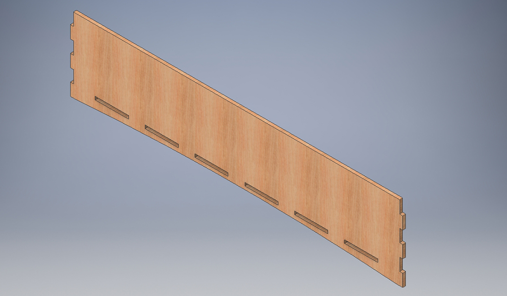
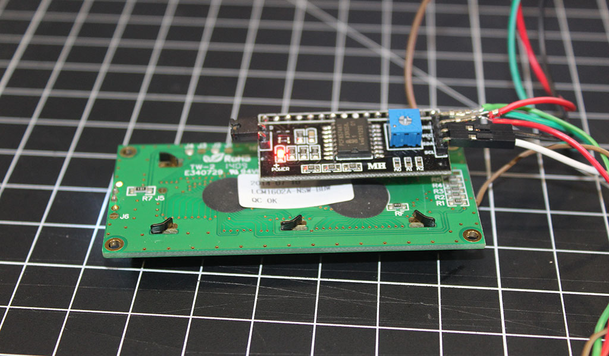
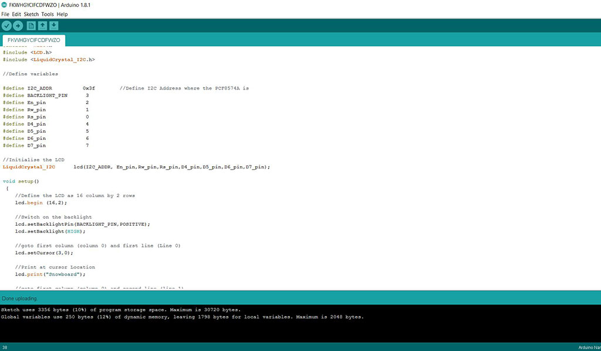
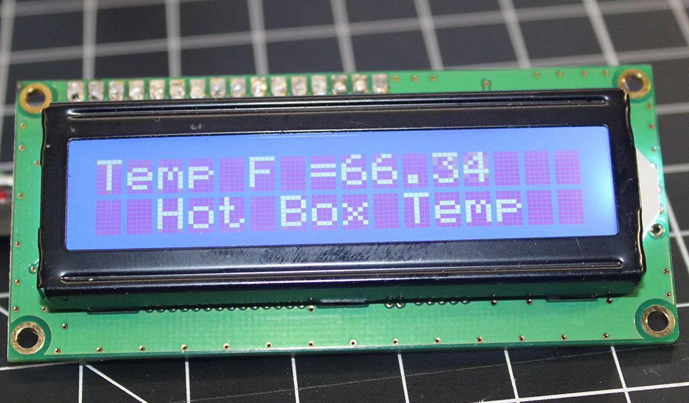
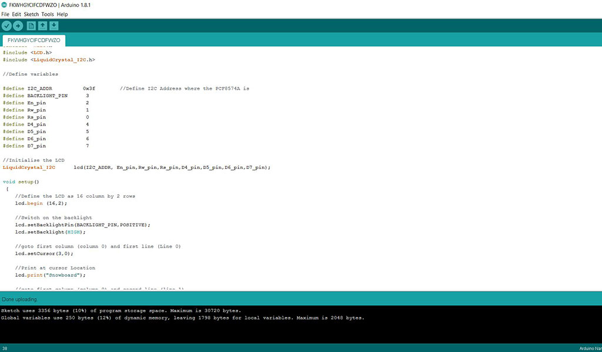
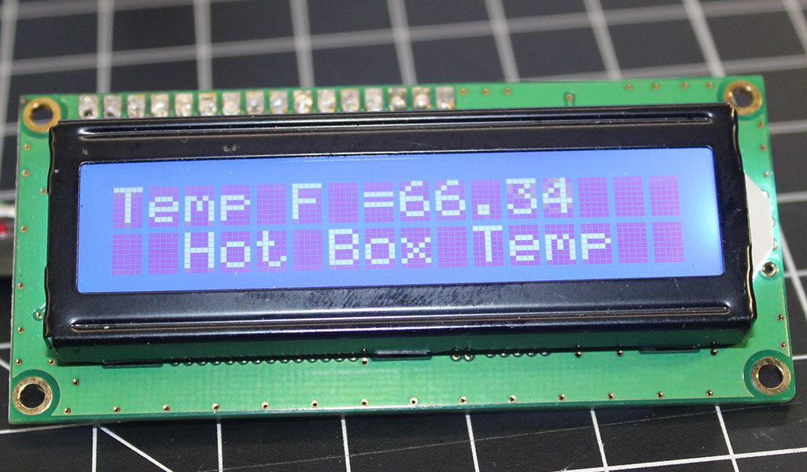
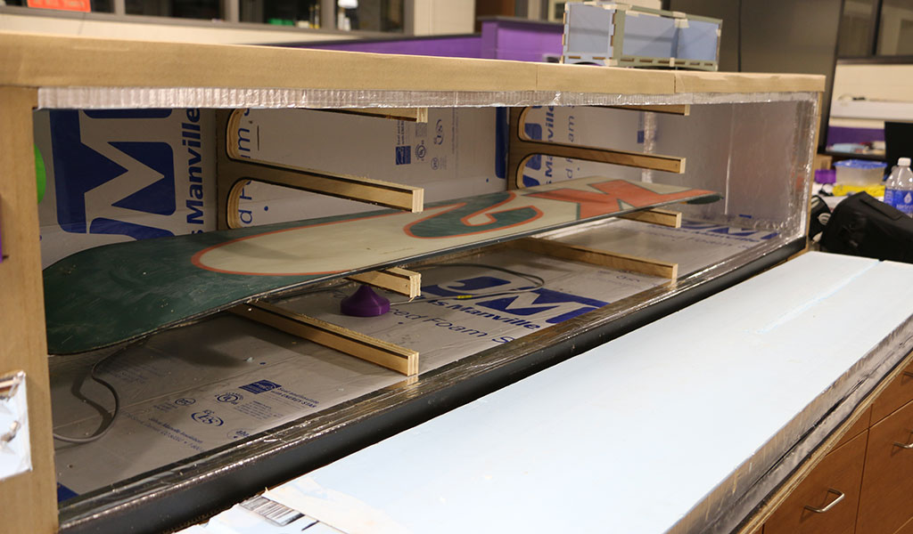
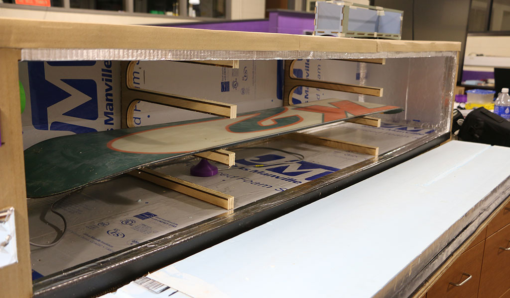

The journey........
I am an avid winter sports enthusiast, tinkerer, and information sponge. When I pick up a new hobby I like to learn all I can about the equipment including maintenance and repair. One of my main winter sports hobbies is snowboarding and with all the fun and rush of adrenaline that comes with making turns there is an abundant amount of upkeep with your snowboard/ski equipment. “Tuning” is a required task on a regular basis, especially in the Mid-West where temperature change and conditions are not always optimal. We can have a drastic swing in both temperature and snow make-up that can ruin your day if you are not set-up correctly. Wax is one of the key ingredients to making sure your day at your local ski resort is an enjoyable one. Unfortunately I have pn more than one occasion been stuck where my wax has not fit the conditions due a drastic change in temperature. Temperature is a very important factor when it comes to wax, glide and speed on a ski run. Waxing can be a time intensive process with the potential for waste and damage to your snowboard. I am also a generally busy person with a full schedule which makes waxing my snowboards regularly quite difficult. I try to have one of my two snowboards set up for a general set of conditions to help make my time at the hill more fun. A typical waxing job takes 3-4 hours of direct hands on time to do it correctly with a normal waxing iron and tuning kit. As we started out with Fab Academy I wanted to see if I could use a commercial process for waxing and make it more hobbyist and cost effective. The initial concept of hot boxing is essentially putting your board in an oven for an extended period of time while controlling the temperature. There are a few designs already on the market that are geared toward professional shops and cost thousands of dollars which put them out of reach for the average person who enjoys maintaining their own equipment. I would like to: -automate the process as much as possible -reduce the amount of material waste -reduce the “hands on” time it takes to wax -increase the quality of the wax application to the snowboard base. -control the temperature accurately -use minimal energy to complete the wax -Use lightweight materials -decrease the cost of the overall project to make it more accessible to the average person.
Initial Sketch of Final Project

For my initial design I used Autodesk Inventor to design the general concept of the Hot Box Cabinet. In keeping with my initial design criterea I wanted to use lightweight and general available/low cost materials to create the cabinet. My initial thought was to use Plywood for the cabinet as you can pick it up at any Home Improvement store or lumber yard but then I started to think about it some more. As I was working for my part time job with a local moving company an idea hit me. I could use the concept of Plywood but take it to a move environmentally friendly level by recycling the vast amounts of cardboard that is by product of the moving industry. The company I work for routinely takes in large amount of moving strength flat cardboard "mirror packs" that is use to protect items shiped via crates. While the industry cannot use these materials more than once they are ideal for using in other projects. I took the concept of plywood and applied it to laminating four layers of cardboard together to create a lightweight and stronger version of cardboard. I knew that I could cut through four layers of cardboard from previous tests Kayla and I did when we first recieved our Universal laser in the Innovation Center. I was able to laminate the end stock together and cut as one piece in the laser. For the sides, top and bottom I had to cut the pieces individually then glue them togther using weights to keep them flat. The result is a comparatively light weight structure vs building it out of 3/4 plywood.
Construction of the Hot Box cabinet
Inventor Designs



Once I had the initial design sketched up in Inventor I used the export pdf function to get the files to the laser via Adobe Illustrator. We were lucky enough to receive a donation of picture matting so I used some of that material to make a small scale model to make sure my fitting and overall design worked in terms of construction
Cutting and assembly of the box
Now that I had the general design down for the construction of the box I set out to use the laser and other lab machines to cut out my cabinet pieces for assembly. As I mentioned before I used the export function in Autodesk Inventor to generate a PDF which could be opened by Adobe Illustrator. We are an Autodesk and Adobe school so I have quite a bit of knowledge with these software packages. After changing the lines to Red/.0001 line thickness used by our Universal laser I started on cutting out the pieces for the cabinet. For any pieces I could get to totally fit into the laser I laminated the cardboard together by alternating the corrigation and using Elmers glue for adhesive. For the larger parts of the cabinet I would use the laser to cut the parts out first then glue them together on the floor of the lab. This posed one issue - seams. I chose to alternate the seams in each ply with lead to me having to create two versions of the laser files. While this added a little time to the process the ending result is a stronger cabinet.
Insulation and taping
One of the major obstacles that I identified with the project was being able to keep the box insulated and air tight. I will talk more about the heat source and why I chose to use it later on in the journey. For insulation I chose to use a double layer of 1/2 inch foil backed rigid insulation. The reason for the double layer instead of the single is that I decided to overlap the seams to help with heat loss. I also used metalic adhesive tape used by the HVAC industry to tape all of the internal and external seams that were part of the heat chamber. My reason for doing this was to hopefull stop as much heat transfer as possible. It also occured to me at this point that the use of corrogated cardboard may also help with insulation as there are air pockets "built into" the design as well. I needed to pay special attention to where the door was mating to the box and I am working on a gasket system to further help with heat loss. The internal temp of the box will be between 130-150 degrees Farenheit in order to get the wax to absorb into the snowboard base. My hope is that once the box and conents are up to temp the actual heating of the box will be reduced to 15-30 seconds every few mintutes. I would like this to use as little electricity as possible.

Initial Wiring Of Controls
Once the box was completely insulated and sealed I began the work of wiring up the initial controls. The box will be run off of a standard 110v outlet used here in the United States. I decided to use a Johnson Controls model a419 temperature control unit to run the heating unit. This controller is nice because it is a proven controller used by many in the home brewing world to help keep their brews at a consistant temperature. I am going to use it to allow my heating unit running within a 5 degree window. The controller allows me to set the operating temp and set an allowable temp range. For most of my Hot box use the controller will allow the heating source to get the box to a temp of 140 degrees Farenheit then shut it off. When the temp in the box falls to 135 the controller will turn the heating unit back on to heat up again. Wiring was pretty straight forward and the unit has its own supplied sensor which can be mounted in the box. To back that up I also plan on having a seperate Arduino based LM 34 sensor reading out to an LCD disply mounted on the box. The reason I chose to encorporate two sensors is that I would like to eventually work a wireless/bluetooth sending unit into the box so that I can keep track of the temp on my personal device. A second reason is that the sensors are located in two different spots. I choose to put the A419 sensor in line with the output of the heating unit so that it will not run constantly while heating up. The hot air from the unit will blow on the A419 and heat it up faster. As the box warms up the sensor will start to normalize the on/off cycles and eventually when the box is up to temp the heating unit will only run for a short time every few minutes. The second Arduino sensor is located in the bottom of the box and will give a more accurate reading of what the temp is at all times.
CNC fabrication of racks
Once I was done with the construction of the cabinet, insulation and wiring it was time to focus on the racks located in the box itself. I have three different snowboards that I ride depending on weather, conditions and type of terrain. I wanted to be able to wax all three boards at one time. I chose to design the file in Autodesk Inventor and use Fusion 360 to generate the G-code for our router. For the actual rack itself I used some scrap 3/4 inch plywood that we had in our woods lab
Programming input and output
After the initial construction was totally complete I focused on the programming of the code to for the temp sensor and the LCD display. I had very limited knowledge on programming so this was a little bit of a struggle for me. I decided to take a multi siep approach on this and worked on the coding seperately before trying to combine them together. I first researched the basic coding for the LM34 sensor. There are dozens of tutorials online that walk you through the basic coding. The hardest part was taking the basic code and getting it to display the right temp. For me I found that I needed to subtract 12 degrees off of the initial reading in order to make it accurate. Once I had the temp code figured out I moved on to the code for the LCD screen. Again there are a bunch of tutorials on how to code these screens. After the inital loading of the code I was able to get the LCD screen to display both Farenheit and Celcius temps on my screen. I decided to tweak the code so that line 1 would read out the temp and line two would read "Hot Box Temp" on it.
 



Final Completed Project
After completing the construction of the project the initial testing went flawlessly. The Hot box takes roughly 5 minutes to heat up to temp on the controller and shuts off. For the next hour or so the box will heat once every 30-60 seconds with each cycle taking less time. After the final pre-heating the box will run for roughly 30 seconds every 5-7 minutes for the next 8-9 hours. I have already waxed one board from last season and will have to wait until the snow flies to see how the Hot Box waxing holds up to traditional waxing by hand. Online research indicates that one hot box treatment = 10 hand waxes. If that holds true this will save me many man hours waxing in my basement.
 

Bill Of Materials
As part of my project goals I wanted to keep this as inexpensive as possible. The following Bill of Materials outlines the cost associated with the construction of the project. Cardboard - Free (waste packaging from local business) Insulation 2 sheets - $11.56 each 1 Gallon Elmers glue - $13.95 Johnson A419 Controller - free (had in shop from another project) LM-34 Temp - $3.10 2 3/4"x1/2"x10' weather stripping - 8.99 each Electrical components - free Metal Duct sealing tape - $3.46


Homebuilt Hotbox by Jeff Willauer is licensed under a Creative Commons Attribution-ShareAlike 4.0 International License.
Based on a work at http://archive.fabacademy.org/archives/2017/fablabwaunakee/students/87/.
copyright (c) <2017> < Jeff Willauer > Permission is hereby granted, free of charge, to any person obtaining a copy of this software and associated documentation files (the "Software"), to deal in the Software without restriction, including without limitation the rights to use, copy, modify, merge, publish, distribute, sublicense, and/or sell copies of the Software, and to permit persons to whom the Software is furnished to do so, subject to the following conditions: The above copyright notice and this permission notice shall be included in all copies or substantial portions of the Software.
THE SOFTWARE IS PROVIDED "AS IS", WITHOUT WARRANTY OF ANY KIND, EXPRESS OR IMPLIED, INCLUDING BUT NOT LIMITED TO THE WARRANTIES OF MERCHANTABILITY, FITNESS FOR A PARTICULAR PURPOSE AND NONINFRINGEMENT. IN NO EVENT SHALL THE AUTHORS OR COPYRIGHT HOLDERS BE LIABLE FOR ANY CLAIM, DAMAGES OR OTHER LIABILITY, WHETHER IN AN ACTION OF CONTRACT, TORT OR OTHERWISE, ARISING FROM, OUT OF OR IN CONNECTION WITH THE SOFTWARE OR THE USE OR OTHER DEALINGS IN THE SOFTWARE.
This is StoneWork, a free, fully standards-compliant CSS template designed by TEMPLATED. The photos in this template are from Fotogrph. This free template is released under the Creative Commons Attribution license, so you're pretty much free to do whatever you want with it (even use it commercially) provided you give us credit for it. Have fun :)